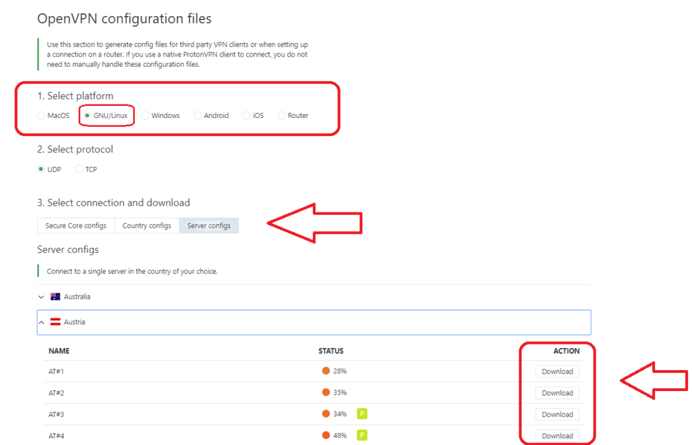
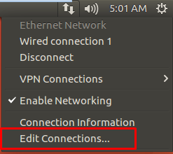
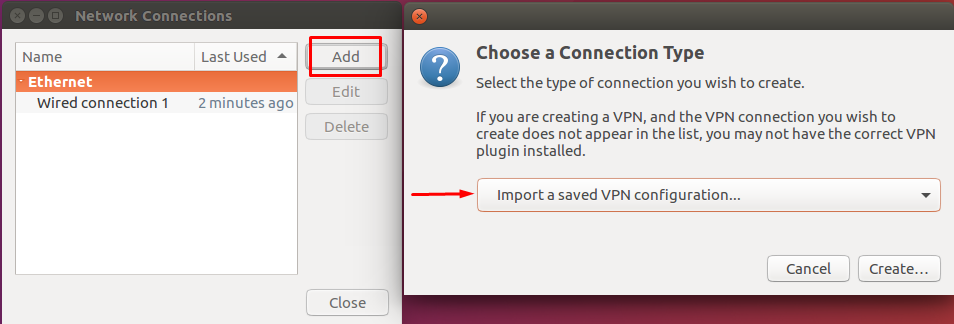
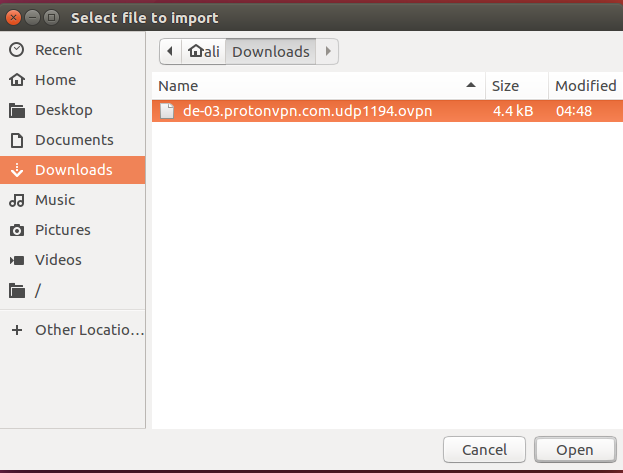
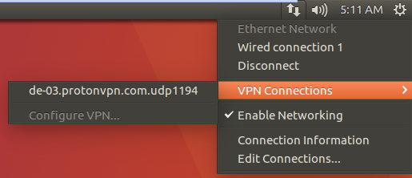

Usando o Proton VPN integrado ao NetworkManager
Introdução
Devido a crescente "necessidade de se utilizar uma VPN" (se é que você me entende), eu fiquei atento para as possibilidades mas nenhuma me deixava confortável... Até ver o serviço da Proton! Mesmo assim, eu não estava interesssado em utilizar nenhum aplicativo externo, então criei essa documentação para te possibilitar o uso de VPN integrado ao NetworkManager que você pode fazer em menos de 5 minutos.
Pegando os dados necessários
Acesse a sua conta Proton e depois acesse esse link.
Em Credenciais:
Copie o Nome de usuário OpenVPN / IKEv2 e a Senha OpenVPN / IKEv2 para algum arquivo de texto;
Em Arquivos de configuração OpenVPN:
Na opção Selecione a plataforma selecione GNU/Linux;
Na opção Selecione o protocolo selecione UDP;
Na opção Selecione o arquivo de configuração e baixe selecione Configurações do servidor gratuito.
Nas opções de servidores clique em Baixar no servidor que se deseja conectar.
Uma vez que você tem as credenciais e o arquivo de configuração do servidor baixado, é necessário instalar a extensão do OpenVPN para o seu NetworkManager caso ainda não tenha, para isso utilize o comando abaixo.
Para Archlinux:
pacman -S networkmanager-openvpn
Para Debian:
sudo apt install openvpn network-manager-openvpn-gnome
Para armazenar as credenciais instale o Gnome Keyring com o comando abaixo.
Para Archlinux:
pacman -S gnome-keyring
Para Debian:
sudo apt install gnome-keyring
Para uma interface gráfica de usuário instale o editor de conexões do Network Manager com o comando abaixo:
Para Archlinux
sudo pacman -S nm-connection-editor
Para Debian
sudo apt install network-manager-gnome
Para instalar um miniaplicativo de bandeja de sistema utilize o comando abaixo:
Para Archlinux
sudo pacman -S network-manager-applet
Para Debian
sudo apt install network-manager-applet
Configurando o NetworkManager
Clique no símbolo de conexão, na barra do sistema e selecione Editar conexões:
Clique em Adicionar para criar uma nova conexão. Selecione Importar uma configuração de VPN salva… e no menu suspenso e clique em Criar…:
Importe o arquivo de configuração do servidor ao qual deseja se conectar, navegando até o local onde você baixou o arquivo de configuração:
Insira as credenciais do OpenVPN nos campos Nome de usuário e Senha da nova janela e clique em Salvar:

Para estabelecer a conexão com o Proton VPN clique no ícone da rede na barra de tarefas. Selecione Conexões VPN, clique na entrada de sua configuração recém-adicionada e ela se conectará automaticamente ao servidor Proton VPN escolhido.
